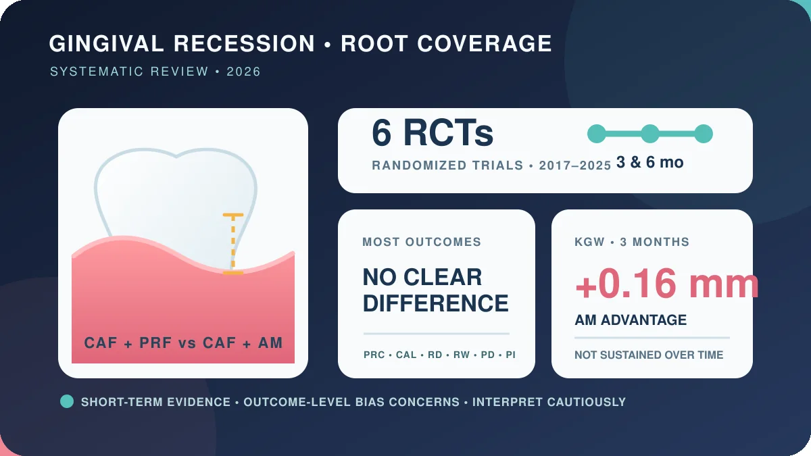

در شش کارآزمایی کوچک و کوتاهمدت، فلپ پیشرفته به سمت تاج همراه با PRF یا غشای آمنیون برای بیشتر شاخصهای پوشش ریشه و سلامت پریودنتال نتایج مشابهی داشت. اختلاف کوتاهمدت ۰٫۱۶ میلیمتری در عرض لثهٔ کراتینیزه به نفع آمنیون، با وجود معنیداری آماری، احتمالاً از نظر بالینی مهم نبود و در طول زمان دوام نداشت.

پژوهش چه پرسشی را بررسی کرد؟
Malik Alkabazi، Asmaa Abou-Bakr، Adriano Piattelli، Gustavo Vicentis Oliveira Fernandes و Fatma E. A. Hassanein این مرور را ۷ اکتبر ۲۰۲۶ در Evidence-Based Dentistry منتشر کردند. پرسش مشخص بود: در تحلیل لثهٔ کلاس I و II میلر، وقتی فلپ پیشرفته به سمت تاج یا CAF انجام میشود، افزودن فیبرین غنی از پلاکت یا PRF بهتر است یا غشای آمنیون یا AM؟ DOI مقاله 10.1038/s41432-026-01270-8 است. [۱]
تحلیل لثه یعنی کناررفتن حاشیهٔ لثه و نمایانشدن بخشی از ریشه. جراحی CAF لثه را به سمت تاج جابهجا میکند تا ریشه پوشانده شود. PRF از خون خود فرد تهیه میشود و شبکهای فیبرینی با پلاکتها و عوامل زیستی میسازد؛ غشای آمنیون یک مادهٔ پیوندی انسانی است. این مرور فقط این دو مادهٔ کمکی را با هم مقایسه کرد و دربارهٔ همهٔ روشهای جراحی لثه داوری نمیکند.
مرور چگونه انجام شد؟
پژوهشگران شش پایگاه داده را بر اساس چارچوب PRISMA جستوجو کردند و شش کارآزمایی تصادفی منتشرشده بین ۲۰۱۷ تا ۲۰۲۵ را وارد جمعبندی کیفی و کمی کردند. مدل اثرات تصادفی برای ترکیب اختلاف میانگینها با فاصلهٔ اطمینان ۹۵ درصد به کار رفت؛ انتخابی که تفاوت واقعی میان مطالعات را محتمل میداند. [۱]
پیامدهای اصلی شامل درصد پوشش ریشه، افزایش عرض لثهٔ کراتینیزه، افزایش ضخامت لثه و کاهش عمق و عرض تحلیل بود. سطح چسبندگی بالینی، شاخص پلاک و عمق پروب نیز بهعنوان پیامد ثانویه بررسی شدند. افزون بر فراتحلیل معمول، تحلیل ترتیبی کارآزمایی یا TSA انجام شد تا روشن شود آیا حجم اطلاعات برای نتیجهگیری درباره یک پیامد کافی است یا ممکن است معنیداری آماری حاصل از دادههای کم باشد.
برای بیشتر پیامدها تفاوتی دیده نشد
در پیگیری سه و ششماهه، بین CAF همراه PRF و CAF همراه غشای آمنیون برای درصد پوشش ریشه، سطح چسبندگی بالینی، کاهش عمق و عرض تحلیل، عمق پروب و شاخص پلاک تفاوت آماری معناداری پیدا نشد. نبود معنیداری به معنای اثبات کامل همارزی نیست؛ با شش مطالعهٔ کوچک، فاصلههای اطمینان و توان آزمون اهمیت زیادی دارند. [۱]
نتیجهٔ محتاطانه این است که دادههای فعلی برندهٔ روشنی نشان نمیدهند. یک مرور پیشین آکادمی پریودنتولوژی آمریکا نیز نشان داده بود افزودن PRF به CAF در کاهش عمق تحلیل، نسبت به CAF یا مواد زیستی دیگر برتری معناداری نشان نداده است؛ آن مرور شبکهای دامنهٔ گستردهتری از مواد و روشها را بررسی میکرد و جایگزین مقایسهٔ مستقیم تازه نیست. [۲]
اختلاف ۰٫۱۶ میلیمتری چه معنایی دارد؟
تنها اختلاف برجسته در سه ماه برای افزایش عرض لثهٔ کراتینیزه بود: میانگین اختلاف ۰٫۱۶ میلیمتر به نفع غشای آمنیون گزارش شد؛ فاصلهٔ اطمینان ۹۵ درصد از ۰٫۰۶ تا ۰٫۲۷ میلیمتر و P برابر ۰٫۰۰۲۸ بود. تحلیل ترتیبی نیز به حجم اطلاعات موردنیاز رسید و از مرز پایش سود عبور کرد. [۱]
اما معنیداری آماری با اهمیت بالینی یکسان نیست. خود نویسندگان این اختلاف را احتمالاً از نظر بالینی ناچیز دانستند و گفتند در طول زمان پایدار نماند. بنابراین نتیجه نه «آمنیون قطعاً بهتر است» بلکه این است که یک اثر کوچک کوتاهمدت در یک شاخص دیده شد؛ اثری که بیشتر پیامدهای مهمتر پوشش ریشه و چسبندگی آن را تأیید نکردند.
حدود شواهد کجاست؟
مزیت مطالعه، تمرکز بر کارآزماییهای تصادفی و استفاده از TSA است. بااینحال فقط شش کارآزمایی، عمدتاً با پیگیری سه تا شش ماه، در دسترس بود. نویسندگان نگرانیهای خطر سوگیری در سطح بعضی پیامدها و مشکلات احتمالی واحد تحلیل را نیز ذکر کردند؛ برای مثال ممکن است چند دندان از یک فرد مانند مشاهدههای کاملاً مستقل تحلیل شده باشند. [۱]
طبقهبندی قدیمی میلر و انتخاب بیماران دارای تحلیل کلاس I یا II نیز تعمیم را محدود میکند. نتیجه را نمیتوان خودکار به نقصهای شدیدتر، سیگاریها، بیماری کنترلنشده، جراحیهای دیگر یا پایداری چندساله تعمیم داد. مرور سال ۲۰۲۴ درباره غشای آمنیون هم پیگیری کوتاه ششماهه را محدودیت اصلی دانست و نیاز به مطالعات بیشتر را برجسته کرد. [۳]
پیام عملی برای تصمیم درمانی چیست؟
انتخاب مادهٔ کمکی نباید فقط بر پایه یک P-value یا اختلاف ۰٫۱۶ میلیمتری باشد. نوع و تعداد نواحی تحلیل، ضخامت بافت، مهارت جراح، امکان تهیه PRF، دسترسی و مقررات غشای آمنیون، هزینه و ترجیح بیمار همگی مهماند. این مطالعه همچنین PRF و آمنیون را با همه گزینهها—از جمله پیوند بافت همبند—مقایسه نکرده است. [۲]
برای بیمار، مشاهدهٔ ریشه یا حساسیت دندان لزوماً به معنی نیاز قطعی به جراحی نیست و انتخاب روش به معاینهٔ پریودنتال وابسته است. این گزارش توصیهٔ شخصی درمانی نیست. پیام پژوهش سادهتر است: دو مادهٔ کمکی رایج در دادههای کوتاهمدت عمدتاً مشابهاند و اختلاف کوچک یک شاخص، دلیل کافی برای اعلام برتری قطعی نیست.
منابع اصلی
چکیدهٔ ساختاریافته، فرادادهٔ انتشار، فهرست کامل نویسندگان، مشارکتها، تعارض منافع و اطلاعات حقوقی در صفحهٔ ناشر بررسی شد. متن کامل بدنهٔ مقاله به ورود/دسترسی Nature هدایت میشد و بررسی نشد؛ بنابراین شمار کل شرکتکنندگان و سایتها، جزئیات کامل خطر سوگیری، ناهمگنی، تحلیل حساسیت و پیامدهای گزارششده توسط بیمار در این گزارش قابل ارزیابی مستقل نبود. تا زمان نگارش اصلاحیه، پسگرفتن مقاله یا ابراز نگرانی پیدا نشد و داوری تخصصی مستقل ادعا نمیشود.
- Alkabazi و همکاران · Evidence-Based Dentistry · مرور نظاممند و فراتحلیل · 2026-10-07 · DOI: 10.1038/s41432-026-01270-8
- Chambrone، Barootchi و Avila-Ortiz · Journal of Periodontology · مرور بهترین شواهد AAP · 2022 · DOI: 10.1002/JPER.22-0075
- Abdel-Fatah و Saleh · BMC Oral Health · مرور نظاممند غشای آمنیون · 2024 · DOI: 10.1186/s12903-023-03825-y
این مطلب برای آگاهی عمومی است و جایگزین تشخیص یا درمان فردی نیست.